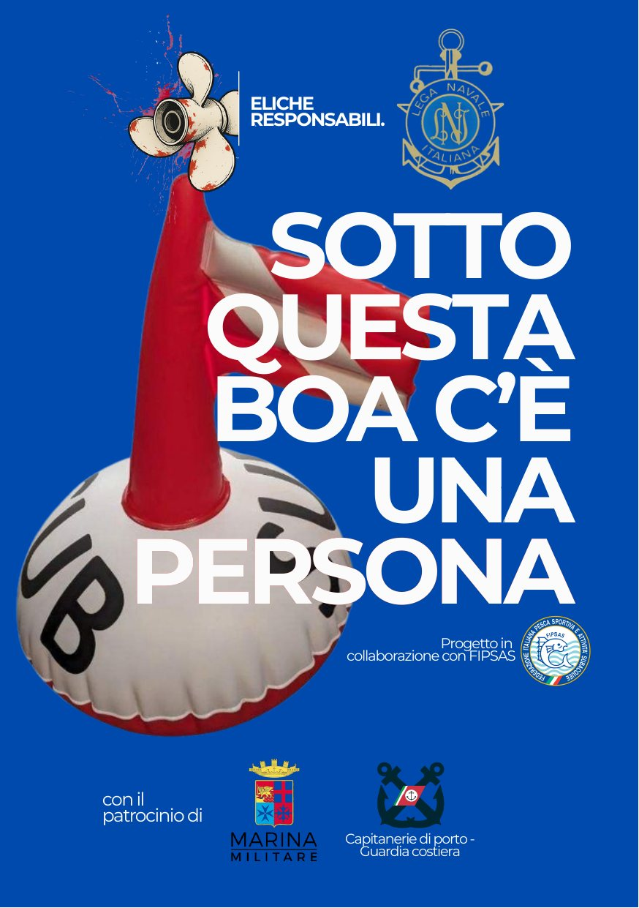
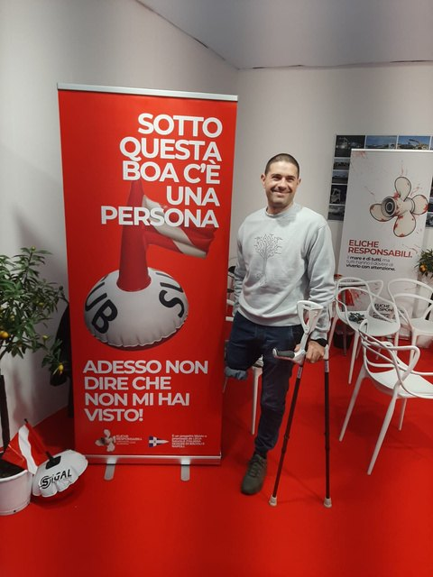
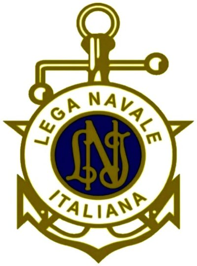

Eliche Responsabili
Meglio un metro in più che una vita in meno.
Il mare è di tutti, ma tutti hanno il dovere di viverlo con attenzione. Una campagna per chi naviga, per chi si immerge, per chi ama il mare.


Il messaggio
La sicurezza in mare non inizia quando si accende un motore. Inizia molto prima: quando si conoscono le regole.
Ogni estate migliaia di persone prendono il mare a bordo di barche e gommoni. Molti lo fanno per la prima volta, altri lo vivono da anni. Eppure esiste un segnale che continua a essere ignorato o, peggio, sconosciuto: la boa con la bandiera rossa e diagonale bianca, che indica la presenza di un subacqueo in immersione.
Sotto quella boa non c'è un semplice galleggiante. C'è una persona.
Da questa consapevolezza nasce Eliche Responsabili, un progetto della Lega Navale Italiana che ha trasformato una regola nautica in un messaggio di responsabilità collettiva, in collaborazione con la FIPSAS.
Non una campagna contro qualcuno, ma una campagna per tutti: per chi naviga, per chi si immerge, per chi ama il mare.
Come riconoscerla
Cosa significa la bandiera rossa con striscia bianca
La bandiera indica la presenza di un subacqueo in immersione. Quando la vedi, significa che una persona è sott'acqua, potrebbe trovarsi in risalita in qualsiasi momento, potrebbe non essere visibile dalla superficie e non può difendersi da un'imbarcazione in movimento.
Perché 100 metri
Secondo la campagna, intorno a una boa o bandiera subacquea va mantenuta una distanza di sicurezza di almeno 100 metri, perché:
- il subacqueo può spostarsi rispetto alla verticale della boa;
- la corrente può trascinare la sagola;
- il sub può emergere lontano dal punto iniziale;
- l'elica è pericolosa anche a bassa velocità.
Avvicinarsi significa mettere una vita in pericolo.
Quando navighi
- Riduci la velocità
- Osserva l'acqua davanti a te
- Allontanati dalle boe subacquee
- Informa chi è a bordo
- Se non sei sicuro, stai più lontano
La testimonianza
Dietro ogni boa c'è una persona

Mario Siriaco
Ogni progetto ha bisogno di numeri. Ma alcuni progetti hanno bisogno soprattutto di volti. Quello di Mario Siriaco è uno di questi.
Subacqueo e profondo conoscitore del mare, Mario ha vissuto in prima persona le conseguenze di un incidente provocato dal passaggio di un'imbarcazione, che ha portato all'amputazione di una gamba. La sua testimonianza è diventata uno dei momenti più significativi della campagna: per ricordare che dietro ogni regola esiste una ragione.
La sua presenza agli incontri pubblici trasforma un'esperienza dolorosa in uno strumento di prevenzione, affinché nessun altro debba vivere la stessa tragedia.
Il video
Mario Siriaco racconta
Il video contiene audio: tocca play per ascoltare.
La campagna
Cultura prima di tutto
Molte persone che frequentano abitualmente il mare non conoscono ancora il significato della boa segnasub né la distanza minima di sicurezza. Da qui nasce la necessità di continuare a informare: la prevenzione inizia dalla cultura.
Le principali iniziative
- Partnership con la FIPSAS – Federazione Italiana Pesca Sportiva Attività Subacquee Nuoto Pinnato
- NauticSud/NauticSub
- Napoli Boat Show
- Corner ai Saloni nautici di Brindisi, Venezia e Genova
- Evento di presentazione nell'ambito della Barcolana
- Incontri con diportisti, noleggiatori e operatori del settore
- Interviste sul campo sul livello di conoscenza delle regole di sicurezza
- Campagne informative sui social
- Materiali educativi, QR Code, adesivi e guide dedicate
I manifesti
Quattro manifesti, un solo messaggio
I manifesti riportano i patrocini della campagna Eliche Responsabili.


Inquadra il QR con la fotocamera
Segui e supporta la campagna
Porta con te la regola dei 100 metri
@elicheresponsabiliofficial
Seguire la campagna è il modo più semplice per diffondere il messaggio: condividi, parlane a bordo, spiegalo a chi noleggia un gommone per la prima volta.
Patrocinio

La Lega Navale Italiana patrocina il 2º Blue World Freediving AIDA Depth Trophy
14–17 ottobre 2026 · Acireale · Acitrezza